All ESCO Categories
Clinical Diagnostics
Solutions for sampling, sample preparation, incubation and diagnostic laboratory workflows.

Products
Search the catalogue or choose an application.
27 of 27 products
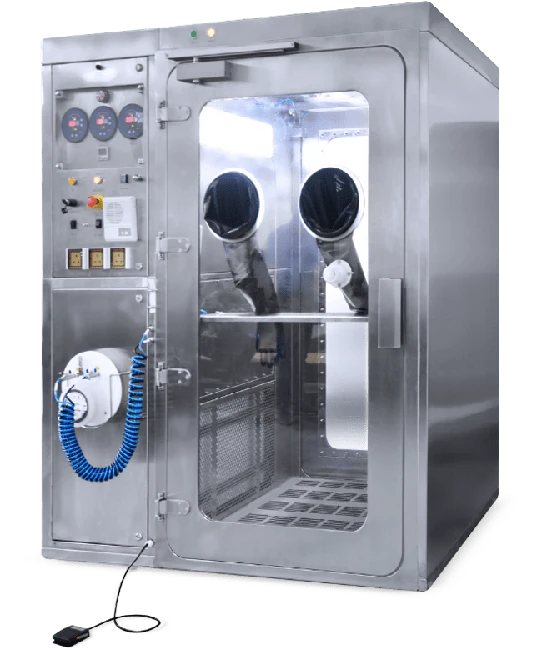
Swab Booth
Infectious Disease Diagnostic Sampling Booth™
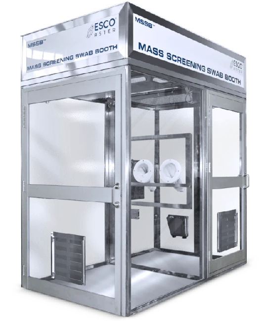
Swab Booth
Mass Screening Swab Booth™
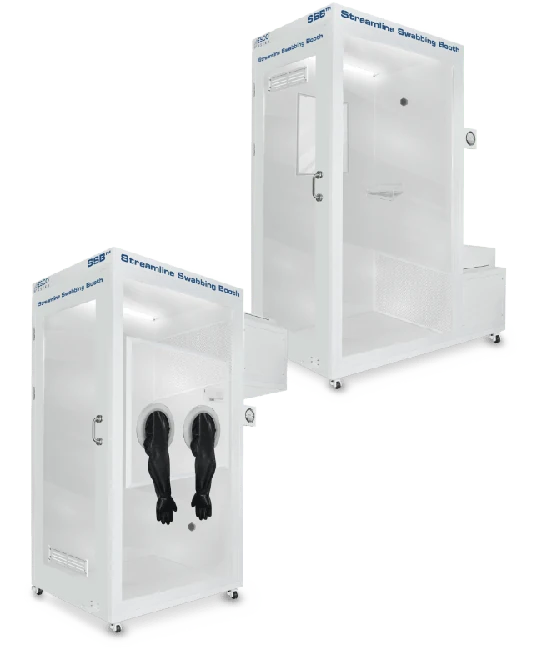
Swab Booth
Streamline Swab Booth™
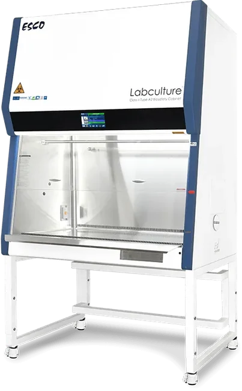
Sample Handling and Preparation
Biosafety Cabinet
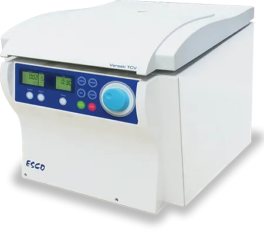
Sample Handling and Preparation
Centrifuge
Sample Handling and Preparation
Class II Biological Safety Cabinet
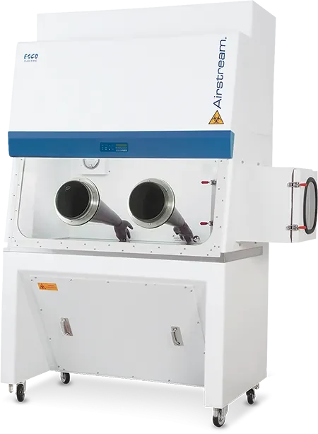
Sample Handling and Preparation
Class III Biological Safety Cabinet
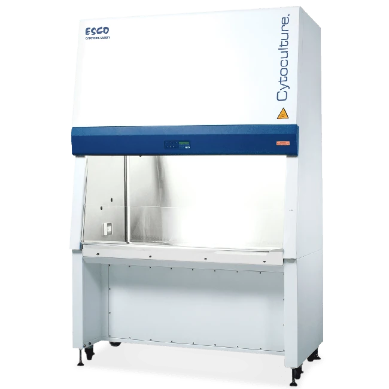
Sample Handling and Preparation
Cytotoxic Cabinet
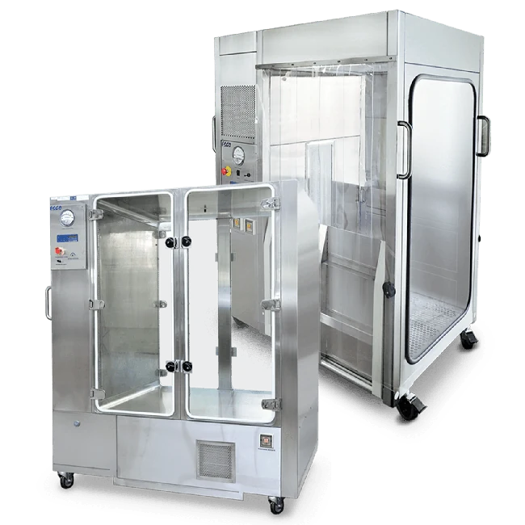
Sample Handling and Preparation
Laminar Flow Trolleys
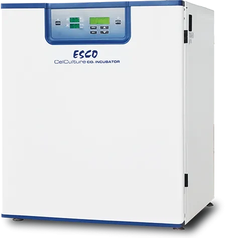
Cultivation / Incubation
CO₂ Incubators
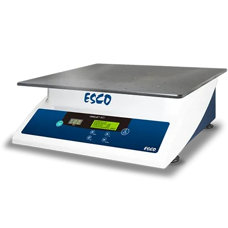
Cultivation / Incubation
Orbital Shaker
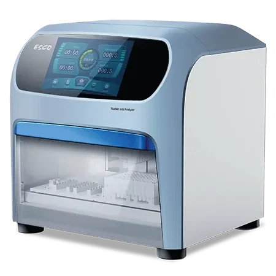
Amplification and Detection
Automated Nucleic Acid Extraction System
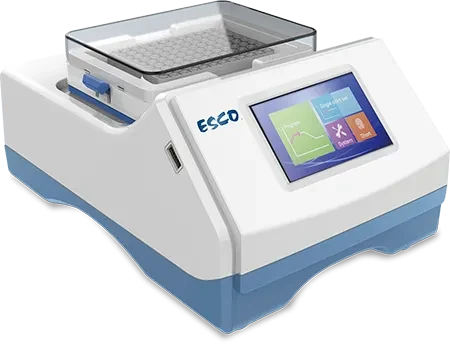
Amplification and Detection
Microplate Shaker/Incubator
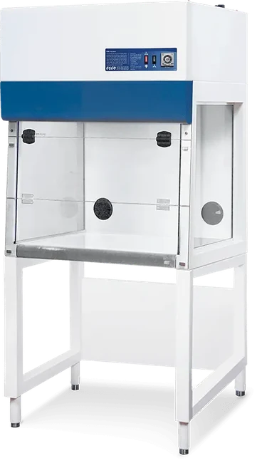
Amplification and Detection
PCR Cabinet
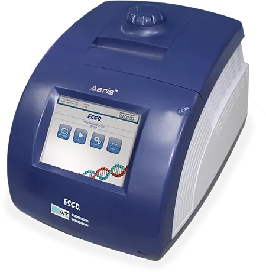
Amplification and Detection
PCR Thermal Cycler
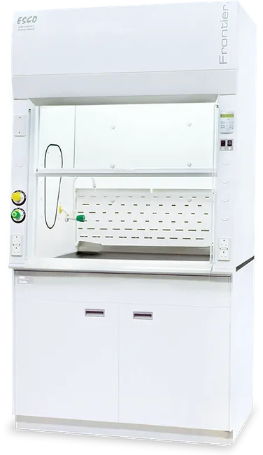
Analysis
Ducted Fume Hood
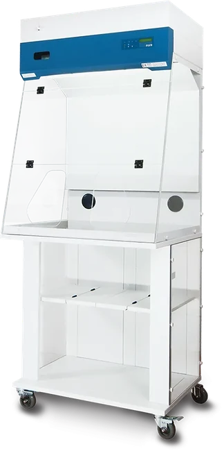
Analysis
Ductless Fume Hood
Bioprocessing
Bioreactor
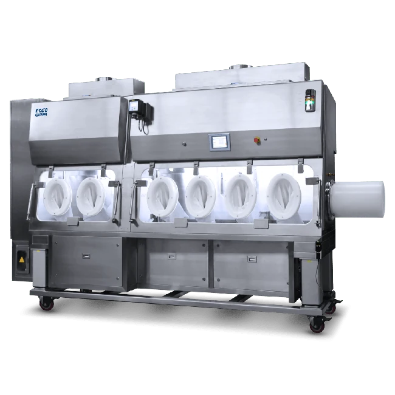
Packaging Storage and Preservation
Isolation Containment (e.g., CPI)
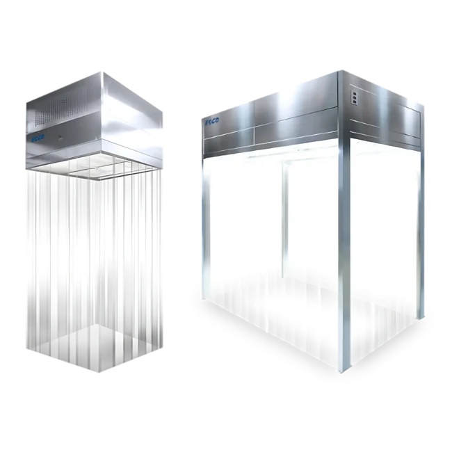
Packaging Storage and Preservation
Laminar Airflow (e.g., CLAF or SLAF)
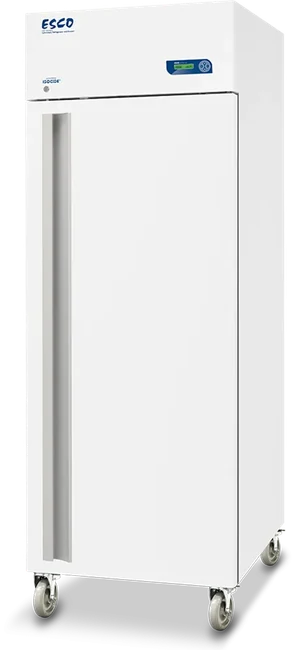
Packaging Storage and Preservation
Lab Freezer
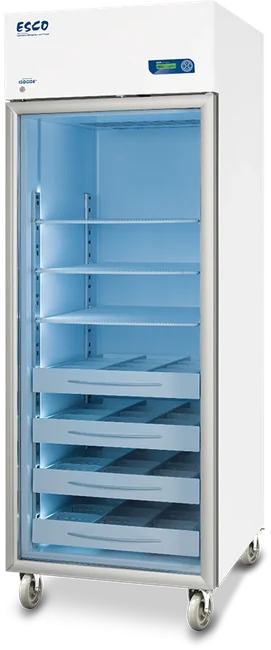
Packaging Storage and Preservation
Lab Refrigerator
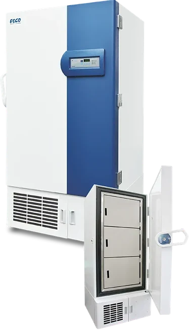
Packaging Storage and Preservation
Ultra-low Temperature Freezer
Processing and Quality Controls
Containment Solutions (esp. CPI & GPPI)
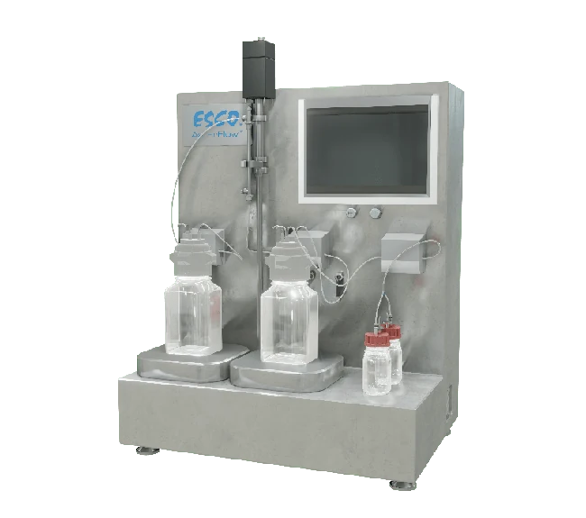
Processing and Quality Controls
Filtration Platform
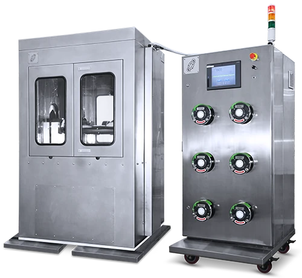
Processing and Quality Controls
Harvesting Systems
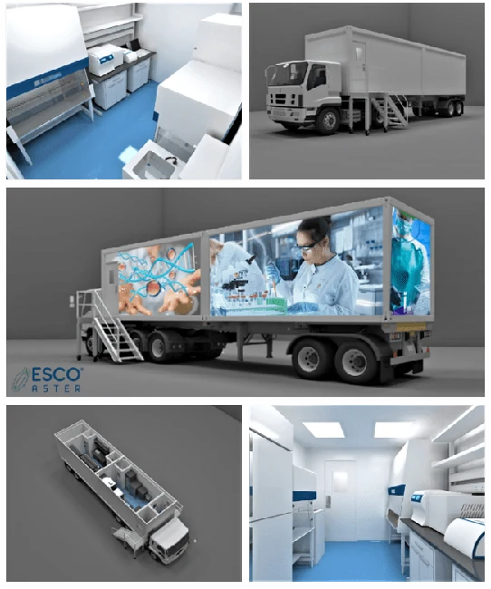
Mobile Testing
Aster Xpress™
No matching products
Try another search or clear the filters.